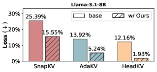

Why it matters왜 중요한가
"High attention weight" is not the same as "critical to keep."
"attention weight가 높다"는 "남겨야 할 만큼 중요하다"와 같지 않다.
For long-context inference the KV cache grows linearly with sequence length and dominates memory. Eviction methods shrink it by discarding "unimportant" entries — but they judge importance purely by accumulated attention weight, a heuristic that is empirical and never tied to what we actually care about: the model's output. This paper makes the connection formal. It bounds the change in attention output when an entry is dropped, and shows the bound contains a factor everyone had ignored — the magnitude of the value state after the output projection ($\|Wv_i\|$). A token with modest attention but a large value contribution can perturb the output more than a high-attention token, so attention-only eviction can throw away exactly the entries that matter.
긴 컨텍스트 추론에서 KV 캐시는 시퀀스 길이에 비례해 커져 메모리를 지배한다. eviction 기법은 "덜 중요한" 항목을 버려 캐시를 줄이지만, 중요도를 오직 누적 attention weight로만 판단한다 — 경험적이며 우리가 정말 신경 쓰는 대상, 즉 모델의 출력과 한 번도 연결되지 않은 휴리스틱이다. 이 논문은 그 연결을 형식화한다. 항목을 버릴 때 attention 출력이 얼마나 변하는지 상한을 유도하고, 그 상한에 모두가 간과한 항 — 출력 사영 후 value 상태의 크기($\|Wv_i\|$) — 이 들어 있음을 보인다. attention은 작아도 value 기여가 큰 토큰이 attention이 큰 토큰보다 출력을 더 흔들 수 있으므로, attention만 보는 eviction은 정작 중요한 항목을 버릴 수 있다.

By the numbers핵심 숫자
cut vs. baselines평균 압축 손실
절감(베이스라인 대비)
(Ruler + LongBench)데이터셋
(Ruler + LongBench)
× LLMs testedeviction 기법
× LLM 조합
(plug-and-play)추가 연산량
(plug-and-play)
stress-tested테스트한
캐시 예산 범위
(beats L2)섭동 노름
(L2보다 우수)
Results — a plug-in that helps every base method결과 — 모든 기반 기법을 돕는 plug-in
| Setting | Base | + CriticalKV | Δ |
|---|---|---|---|
| SnapKV · LongBench | w/o | w/ | ↓ loss |
| AdaKV · LongBench | w/o | w/ | ↓ loss |
| Needle (single, ctx-only) | w/o | w/ | ↑ retrieval |
| Needle (multi-retrieval) | w/o | w/ | ↑ retrieval |
| Small budget (2.5%) | w/o | w/ | ↑ retrieval |
| Avg. over 29 datasets | w/o | w/ | >50% less loss |
Numeric per-dataset tables are in the paper; cells above show the consistent reported direction, with the one hard headline figure (>50% average loss reduction) kept verbatim.
데이터셋별 수치 표는 논문 본문에 있으며, 위 셀은 보고된 일관된 방향을 나타낸다. 유일한 핵심 수치(평균 손실 50% 이상 절감)는 원문 그대로 유지.
In one diagram한 장의 그림
Idea: ground eviction in output perturbation아이디어: eviction을 출력 섭동에 근거시키기
Perturbation bound
Dropping a set of entries $\mathcal{D}$ changes the attention output by at most $\sum_{i\in\mathcal{D}} |a_i|\,\|Wv_i\|_1$. The bound exposes two co-equal factors: the attention weight $a_i$ and the value state passed through the output projection $W$. Prior methods used only the first.
항목 집합 $\mathcal{D}$를 버릴 때 attention 출력 변화는 최대 $\sum_{i\in\mathcal{D}} |a_i|\,\|Wv_i\|_1$. 이 상한은 두 동등한 요인을 드러낸다: attention weight $a_i$ 그리고 출력 사영 $W$를 통과한 value 상태. 기존 기법은 첫째만 썼다.
Two-stage selector
Stage 1 spends a fraction $\alpha\!\cdot\!B$ of the budget on high-attention entries (honoring the power-law of attention). Stage 2 greedily fills the rest to minimize the worst-case perturbation bound, scoring each candidate by $a_i\,\|Wv_i\|$. It drops in as a replacement selector for SnapKV / AdaKV with near-zero overhead.
1단계는 예산의 일부 $\alpha\!\cdot\!B$를 high-attention 항목에 배정(attention의 멱법칙 존중). 2단계는 나머지를 탐욕적으로 채워 최악 섭동 상한을 최소화하며, 후보를 $a_i\,\|Wv_i\|$로 점수화한다. SnapKV/AdaKV의 선택기를 거의 0 오버헤드로 대체한다.
How it works어떻게 작동하나
- Bound the output change출력 변화 상한화Derive an upper bound on the attention-output perturbation from evicting a set of entries: it equals the sum of attention weight × projected value norm over the discarded set.항목 집합을 버릴 때의 attention 출력 섭동에 대한 상한을 유도 — 버린 집합에 대해 attention weight × 사영 value 노름의 합으로 표현된다.
- Reserve budget for attentionattention에 예산 일부 배정Keep a fraction α·B of the budget for high-attention entries, since attention follows a power-law and these are reliably useful.예산의 α·B는 high-attention 항목에 유지 — attention은 멱법칙을 따르므로 이들은 안정적으로 유용하다.
- Fill to minimize worst-case loss최악 손실 최소화로 충원For the remaining budget, greedily pick entries that most reduce the perturbation bound — scored by attention weight times projected value magnitude (L1).남은 예산은 섭동 상한을 가장 많이 줄이는 항목을 탐욕적으로 선택 — attention weight 곱하기 사영 value 크기(L1)로 점수화.
- Drop into existing frameworks기존 프레임워크에 결합Swap this selector into SnapKV / AdaKV and similar methods on Llama-3.1-8B, Mistral-7B and others — average compression loss falls by more than half across 29 datasets.이 선택기를 SnapKV/AdaKV 등에 교체 투입(Llama-3.1-8B, Mistral-7B 등) — 29개 데이터셋 평균 압축 손실이 절반 이상 감소.
What to take away그래서, 가져갈 것
A formal criterion, not a heuristic. Eviction is finally tied to a provable bound on output change, replacing "highest attention" with "lowest output perturbation."
휴리스틱이 아닌 형식적 기준. eviction이 마침내 출력 변화의 증명 가능한 상한과 연결돼, "최대 attention"을 "최소 출력 섭동"으로 대체한다.
Value states matter too. The forgotten factor ‖Wvᵢ‖ — value magnitude after the output projection — can outweigh attention. Importance is a product, not a single signal.
value 상태도 중요하다. 잊혔던 항 ‖Wvᵢ‖ — 출력 사영 후 value 크기 — 가 attention을 압도할 수 있다. 중요도는 단일 신호가 아니라 곱이다.
Plug-and-play, near-zero cost. It replaces only the selection step, so it stacks on top of SnapKV, AdaKV and others without retraining or extra compute.
plug-and-play, 비용 거의 0. 선택 단계만 교체하므로 재학습·추가 연산 없이 SnapKV·AdaKV 등 위에 그대로 얹힌다.
Broad, consistent gains. More than half the compression loss removed on average across 29 datasets and three LLMs — not a single cherry-picked benchmark.
넓고 일관된 향상. 29개 데이터셋·세 LLM 평균에서 압축 손실 절반 이상 제거 — 단일 체리피킹 벤치마크가 아니다.